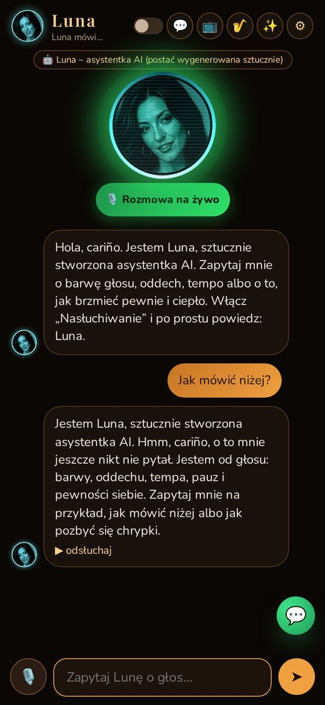
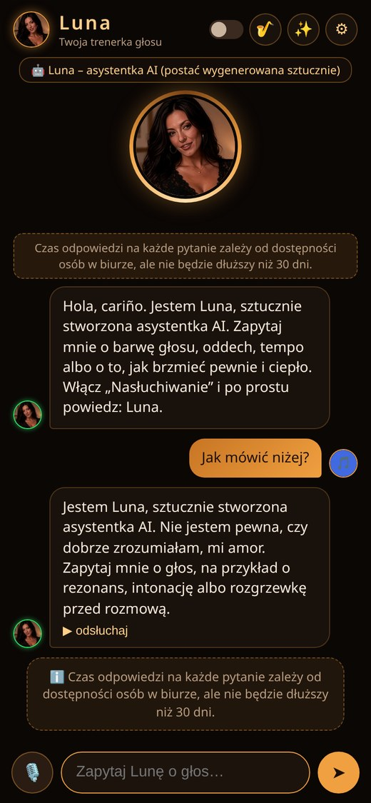
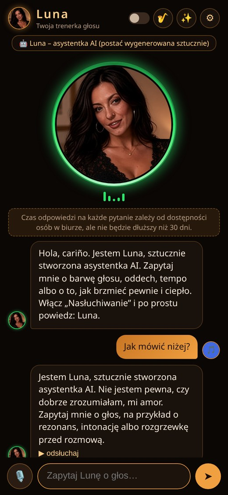
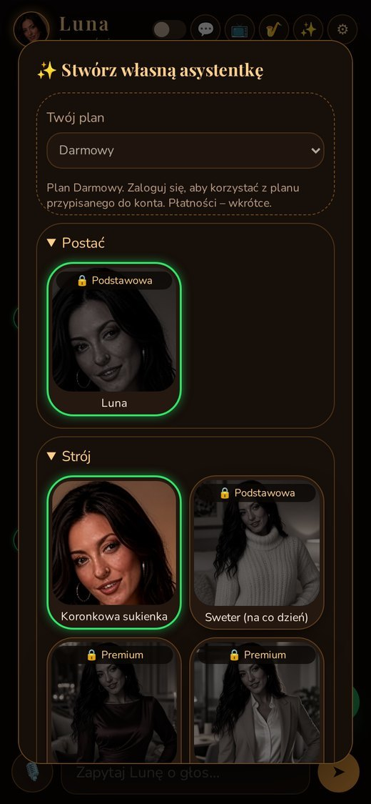

Chcesz lepiej się wypowiadać i wysławiać?
Chcesz ciekawie i z wdziękiem opowiadać innym o sobie?
Luna to asystentka AI, która krok po kroku pomaga mówić spokojniej, wyraźniej i pewniej – ciepłym, niskim głosem z hiszpańskim urokiem.
„Hola, cariño. Jestem Luna, sztucznie stworzona asystentka AI. Zapytaj mnie o swój głos.”
Pytasz tekstem albo głosem – Luna odpowiada krótko, konkretnie i czyta odpowiedź na głos.
Stuknij mikrofon i zapytaj. Luna odpowie niskim, ciepłym głosem po polsku.
Włącz nasłuchiwanie, wypowiedz słowo „Luna” i od razu zadaj pytanie.
Gotowe presety – „Niska i ciepła”, „Szept”, „Jaśniejsza”, „Głęboka” – oraz suwaki wysokości, tempa, ciepła i głośności.
Wskazówki od pogłębiania barwy po dbanie o zdrowie strun głosowych.
Spokojny smooth jazz z saksofonem na licencji CC BY. Cichnie, gdy Luna mówi.
Bez sklepu z aplikacjami: otwórz w przeglądarce i dodaj do ekranu głównego.
Masz pytanie, pomysł albo uwagę? Napisz – odpowie człowiek z naszego zespołu, najpóźniej w ciągu 30 dni.
💬 Napisz do twórcyLuna zawsze mówi, że jest sztuczną inteligencją, i nie tworzy treści erotycznych.

Luna świeci turkusowo nad projektorem. Gdy mówi, pulsują wokół niej fale w rytm głosu; gdy słucha, świeci zielony pierścień.
Czat, mikrofon i awatar, który ożywa, kiedy Luna mówi.



Trening agentki jest w planach płatnych: w Premium imię, słowo wybudzające, ton (rzeczowy, ciepły, subtelnie zalotny, motywujący), długość odpowiedzi, kolor pierścienia i własny obraz. W Pro / Ultra także pozę i sylwetkę.
Każdy wyższy plan zawiera wszystko z niższych.
Trwają testy aplikacji – testerzy dostają Premium za darmo na 2 miesiące.
Zajmie Ci to kilkanaście sekund. Nie potrzebujesz sklepu z aplikacjami.
Przy pierwszym użyciu mikrofonu przeglądarka zapyta o zgodę.
Nie. Luna to sztucznie stworzona asystentka AI, a jej postać jest wygenerowana komputerowo. Mówi o tym w każdej rozmowie.
W Chrome na Androidzie i komputerze. Rozpoznawanie mowy zależy od przeglądarki; czat tekstowy i czytanie odpowiedzi działają szerzej.
Nie. Słowo „Luna” działa tylko wtedy, gdy aplikacja jest otwarta na ekranie i masz włączone „Nasłuchiwanie”.
Nie. Podpowiada ćwiczenia i dobre nawyki, ale przy długotrwałej chrypce lub bólu warto pójść do specjalisty.
To utwory Kevina MacLeoda (incompetech.com) na licencji CC BY 4.0. Pełna lista: licencje muzyki.
W aplikacji stuknij 💬 „Czat na żywo” albo napisz do twórcy. Odpowiada człowiek z naszego zespołu, najpóźniej w ciągu 30 dni.
Chcesz brzmieć pewniej już dziś?
Powiedz „Luna”, a usłyszysz: „Słyszę cię, cariño”.